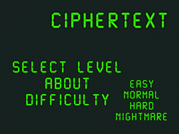
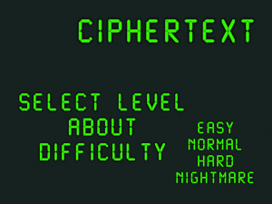

Move to the adjacent safe square/s using the information based on the number of mines around you. Use your logic and memory to complete 40 unique levels.
Can't find a way out? Use your abilities: move diagonally or meditate to get detailed information about number of mines around you.
There a portals to make things harder too!
Push the limits of your memory by adjusting the difficulty level.
Collect clues by completing levels and try to decrypt the ciphertext.
 


3 out of 5 stars from appadvice.com
"…This game is about as basic as it gets. With computer-terminal-like graphics, no sound, and easy gameplay, this couldn’t be any more bare bones. Yet it’s the strategy and subtle hints dropped along the way that provide the challenge. …"
"Such a cool idea to make a version of minesweeper. Pooping is more fun now!" -★★★★★
"If you enjoy the puzzle logic of minesweeper, you're in for a real treat with this one. Same fun base, but rebooted and surprisingly modern and slick." -★★★★